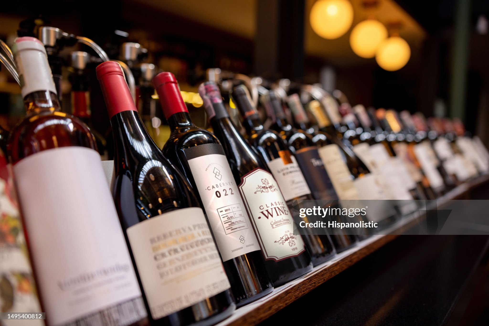
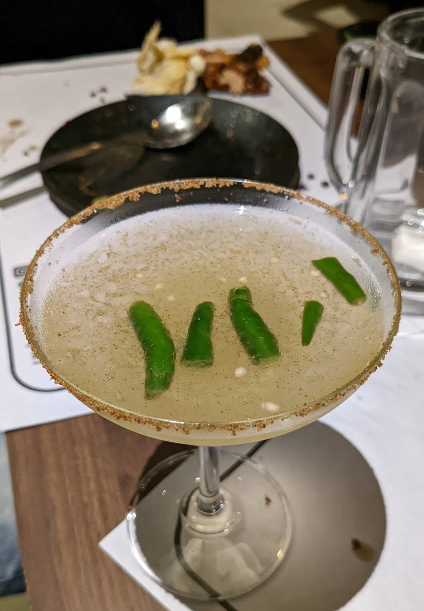
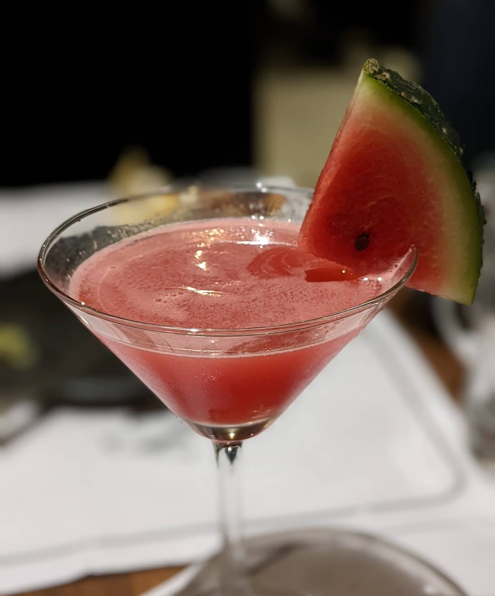

<--------------------------------------------->🍷Welcome to our Wine Shop🍷<---------------------------------------------->

About our Wine Shop : -
Our collection at The Vintage Cellar stands as a testament to uncompromising quality and the fine art of viticulture. We take immense pride in sourcing our wines exclusively from world-renowned vineyards where sustainable farming and traditional harvesting techniques are the standard. Every bottle in our shop is selected based on a rigorous evaluation of its body, aroma, and aging potential, ensuring that we offer only the best in class for both casual enthusiasts and serious collectors. From the rich, complex tannins of our premium reds to the crisp, vibrant acidity of our whites, our commitment is to provide a pure and authentic experience that honors the true heritage of the grape. When you choose from our cellar, you are choosing a product that has been handled with care, stored in climate-controlled environments, and verified for excellence, making it the finest quality available on the market today.
🥀Quality is not an act , it is a habit 🥂.
Our Speciality : -
| -- Vertical Vintage Specialization -- |
"At The Vintage Cellar our premier specialty is Vertical Vintage Curation. We do not simply stock a variety of labels; we maintain a deep, multi-year library of the world’s most prestigious estates. This allows our patrons to acquire 'Vertical Sets'—the same wine produced across consecutive years.
This specialization is the ultimate mark of quality, as it demonstrates our commitment to long-term cellaring and provenance. Whether you are looking for a 2015 Bordeaux to drink today or the 2010, 2011, and 2012 vintages to compare side-by-side, our shop provides the unique historical perspective that only a true 'Old World' specialist can offer. We track the evolution of the grape from the vine to the bottle, ensuring that every vintage in our collection has matured under perfect, climate-controlled conditions."
Our Products : -

1. Spicy Green Chili Margarita(Picante de la Casa)
Description: A bold, refreshing cocktail that balances the acidic brightness of lime with the creeping heat of fresh green chilies. The rim is finished with a savory, spicy salt blend that hits the palate before the cool liquid arrives.
2. The Summertime Watermelon Martini
Description: A crisp and ultra-refreshing cocktail that captures the essence of summer in a glass. This drink relies on the natural sweetness of fresh watermelon, balanced with a sharp citrus finish. It’s light, vibrant, and incredibly photogenic.

3. Vintage Rustic Red
Description: A sophisticated and timeless choice. This deep red wine offers a complex profile of dark berries and oak. Garnishing it with fresh grapes not only looks artistic but also hints at the natural, earthy origins of the beverage.
"Welcome! You're just one click away from the perfect drink. Explore the recipes, try something new, and enjoy the vibe."
| --------------------------------------------- Visit us 🥀 --------------------------------------------- |